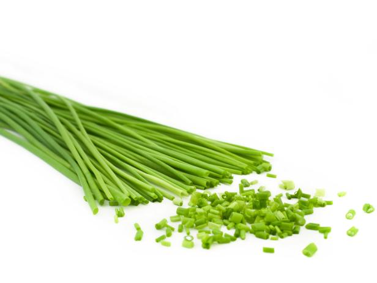

COFFEE
COFFEE
Welcome to CAFE
World's Best Scrambled Eggs
Scroll down instead
I adapted this recipe from a book called Sydney Foods by BILL GRAINGER. Ever since tasting these eggs on my 1st visit to Bill's resturant in Kings, cross, Sydney , I have been after the recipe. I have been tranformed it into what I really belive are the best scrambled eggs I have ever tested.
Scroll down instead
This recipe is a what I call a
Very special Breakfast
just look at the Ingredients to see why.
It has to be tated to be believed.
WORLD's BEST
Ingredients
Following Ingredients are make one Serve
| 2 eggs | 1 Table spoon of butter (10g) | 1/3 cup of cream. (2 3/4 fl ounces) | A pinch of a salt | 3 Fresh chives (chopped) |
|---|---|---|---|---|

|

|

|

|
 |
SCRAMBLED EGGs
Instructions
- BEAT eggs, milk, salt and pepper in medium bowl until blended.
- HEAT butter in large nonstick skillet over medium heat until hot.
- POUR in egg mixture. As eggs begin to set, gently PULL the eggs across the pan with a spatula, forming large soft curds.
- CONTINUE cooking—pulling, lifting and folding eggs—until thickened and no visible liquid egg remains. Do not stir constantly.
- REMOVE from heat. SERVE immediately.